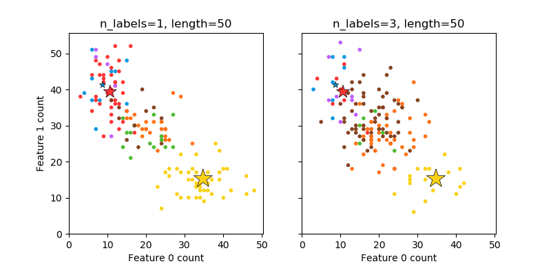

Note
Click here to download the full example code
Sample_plot¶
Out:
C:\Users\user\Desktop\sphinx_example\doc\examples\plot_sample_second.py:58: UserWarning: Matplotlib is currently using agg, which is a non-GUI backend, so cannot show the figure.
plt.show()
The data was generated from (random_state=643):
Class P(C) P(w0|C) P(w1|C)
red 0.35 0.21 0.79
blue 0.13 0.17 0.83
yellow 0.52 0.69 0.31
import numpy as np
import matplotlib.pyplot as plt
from sklearn.datasets import make_multilabel_classification as make_ml_clf
print(__doc__)
COLORS = np.array(['!',
'#FF3333', # red
'#0198E1', # blue
'#BF5FFF', # purple
'#FCD116', # yellow
'#FF7216', # orange
'#4DBD33', # green
'#87421F' # brown
])
# Use same random seed for multiple calls to make_multilabel_classification to
# ensure same distributions
RANDOM_SEED = np.random.randint(2 ** 10)
def plot_2d(ax, n_labels=1, n_classes=3, length=50):
X, Y, p_c, p_w_c = make_ml_clf(n_samples=150, n_features=2,
n_classes=n_classes, n_labels=n_labels,
length=length, allow_unlabeled=False,
return_distributions=True,
random_state=RANDOM_SEED)
ax.scatter(X[:, 0], X[:, 1], color=COLORS.take((Y * [1, 2, 4]
).sum(axis=1)),
marker='.')
ax.scatter(p_w_c[0] * length, p_w_c[1] * length,
marker='*', linewidth=.5, edgecolor='black',
s=20 + 1500 * p_c ** 2,
color=COLORS.take([1, 2, 4]))
ax.set_xlabel('Feature 0 count')
return p_c, p_w_c
_, (ax1, ax2) = plt.subplots(1, 2, sharex='row', sharey='row', figsize=(8, 4))
plt.subplots_adjust(bottom=.15)
p_c, p_w_c = plot_2d(ax1, n_labels=1)
ax1.set_title('n_labels=1, length=50')
ax1.set_ylabel('Feature 1 count')
plot_2d(ax2, n_labels=3)
ax2.set_title('n_labels=3, length=50')
ax2.set_xlim(left=0, auto=True)
ax2.set_ylim(bottom=0, auto=True)
plt.show()
print('The data was generated from (random_state=%d):' % RANDOM_SEED)
print('Class', 'P(C)', 'P(w0|C)', 'P(w1|C)', sep='\t')
for k, p, p_w in zip(['red', 'blue', 'yellow'], p_c, p_w_c.T):
print('%s\t%0.2f\t%0.2f\t%0.2f' % (k, p, p_w[0], p_w[1]))
Total running time of the script: ( 0 minutes 0.475 seconds)